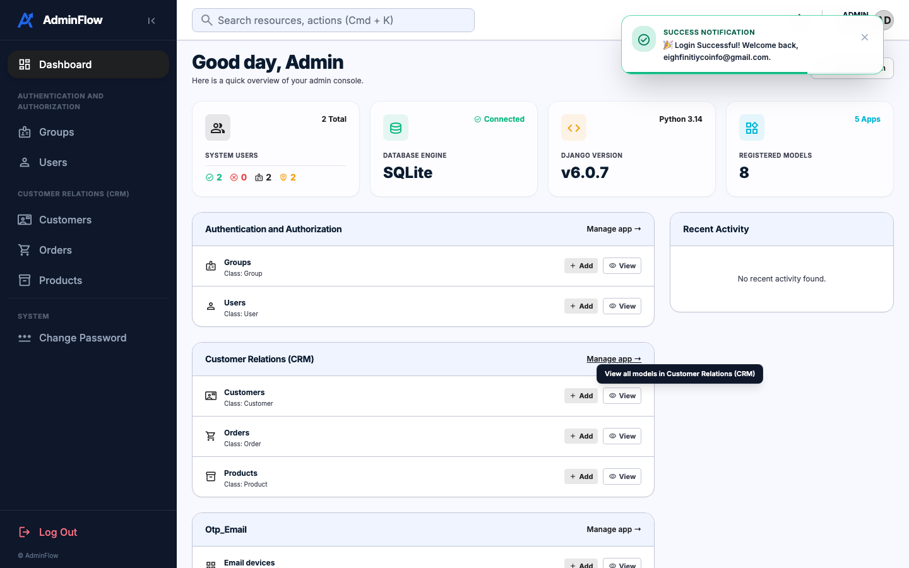

django-adminflow
A modern Django Admin UI template with built-in integrations for popular 3rd party packages.


AdminFlow is a drop-in Django Admin UI template that replaces the default Django admin with a clean, minimalist SaaS-grade interface. Beyond the UI refresh, it ships with ready-to-use integrations for the most popular Django ecosystem packages — two-factor authentication, per-record audit history, and multi-format import/export — so you get powerful admin features with zero boilerplate.
One package, instant upgrade
Install it, add it to INSTALLED_APPS, and your admin instantly looks and
works like a premium SaaS product.

Contents
Getting Started
Features at a Glance
Feature |
Description |
|---|---|
🎨 Modern UI |
Minimalist SaaS design — sidebar navigation, clean typography, responsive layout |
🔒 Two-Factor Auth |
TOTP (Google/Authy), email OTP, backup codes — multi-device support via |
📜 Audit History |
Per-record change history with field-level diffs via |
📤 Import / Export |
Multi-sheet XLSX + nested JSON via |
🔌 Plug & Play |
Add to |
🌐 i18n Ready |
All UI strings use |